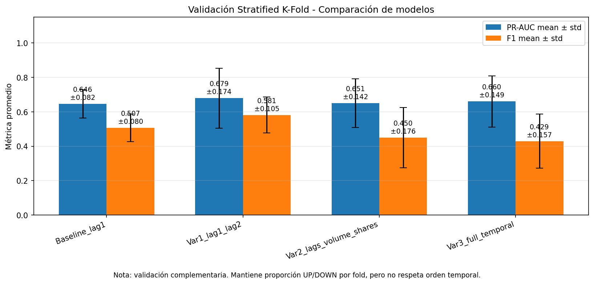
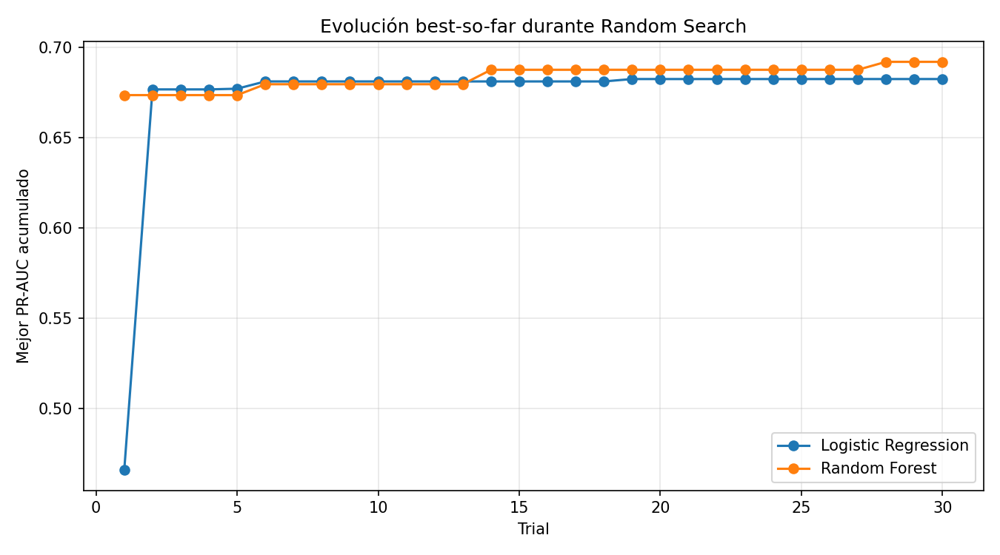

Noticias financieras → Sentimiento diario → Señales para tipo de cambio
Noticias acumuladas
Sentimiento promedio
Variación USD/PEN
Hit rate modelo
Verde = acierto. Rojo = error. Gris = sin predicción.
El modelo ganador fue un Random Forest entrenado con dos variables temporales: lag_sent_1 y lag_sent_2.
Estas variables representan el sentimiento agregado del día anterior y de hace dos días. La idea es capturar memoria temporal corta en el mercado cambiario.
El modelo no predice tres clases. Actualmente predice una variable binaria: UP o NO_UP.
La métrica principal usada fue PR-AUC porque permite evaluar la capacidad del modelo para detectar la clase positiva, es decir, días en los que el USD/PEN sube.
Modelo seleccionado: Random Forest ganador

